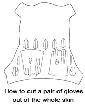
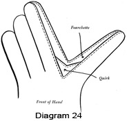

1950—How to Make Gloves
by Eunice Close
Section 3
Making a Pair of Chamois Gloves
(a) Choosing the Skin
The making of a pair of unlined chamois gloves is quite simple even if you have never made any gloves before. As the material is soft and pliable it is an excellent leather on which the beginner can experiment. Buy as good a quality of leather as you can afford. Do not be tempted to buy a cheap leather in case you spoil it. The chances are that this is just what you will do, simply because poor chamois is more difficult to use than a better quality. You will inevitably be disappointed with the result of your work and probably decide that glove making is a waste of time which, of course, it is, if you are satisfied to put your work into poor material.
When you buy the skin hold it up to the light and note if there are thin places or flaws in it. If these are near the middle choose another skin. Feel, too, if there are any hard bits in it. If these are near the edge they will not matter, but a thick spot near the centre can be a nuisance.
Having chosen your leather decide how you are going to stitch it. Black, brown, or navy buttonhole twist is decorative, and being in a contrasting color is a great help in showing you if your seams are done properly. The stitch must be done very evenly, so if you are in any doubt as to your ability to make the stitches perfectly regular choose a matching gloving thread. You will not need a special gloving needle for chamois, but can use an ordinary sewing needle with an eye large enough to take whatever thread you decide to use.
(b) Marking and Cutting Out
This is almost the most important operation in glove making and it is imperative that you do it properly. No amount of "wangling" afterwards will put right a seam that is even slightly askew. Stretch the leather well in all directions. Some chamois leather is supplied to the shops, already stretched, and if this has been done you need not stretch it further, except to find out which way is more elastic. Most good leathers stretch more across the width than they do lengthways, and when placing your pattern on the leather you must make sure that the "stretch" will go round the hand and not up and down.
Pin the leather, well-stretched, face down on a drawing board or other perfectly smooth surface. The top of the kitchen table will do quite well if you have no objection to sticking thumbtacks in it. Lay the pattern on the leather and go round each section very carefully, using a soft well-sharpened pencil. Hold the pattern very firmly so that it cannot slip, since it is very easy to make an error which you will not be able to put right once the glove has been cut out. Draw round the top of each finger, then bend back each section so that you can draw the lines for the slits between them.
Turn the patterns for the trank and thumb over for the second glove and be careful to draw the hole for the thumb very accurately. When using chamois you may find it more economical to turn the pattern upside down for the second glove. If you wish to do this it is a good idea to cut out the first trank and lay it beside the pattern while you draw the second one. In this way you can make quite sure that you will not find yourself with two gloves for the same hand.
As chamois is so pliable and stretches in wear, even when it has been well-stretched beforehand, it is not usual to include quirks. You will, therefore, find that most chamois patterns use single fourchettes. Draw round the fourchette pattern six times for the first glove, then turn it over and draw round it another six times. The thumb and fourchettes must be placed on the leather in the same directions as the main part.
You will probably find your pencil point wearing down as you work, so keep a penknife handy. Absolute accuracy is essential as otherwise the various parts of the glove will not fit, and even the thickness of a pencil can make a difference.
Having marked out all the pieces, remove the thumbtacks and cut out each piece very carefully, following the pencil line.
Make long smooth cuts wherever possible, for it is very difficult to trim off jagged edges once the leather has been cut.
(c) Making Up
The one drawback to making up chamois leather, which does not affect other types, is that if it is of good quality it is sometimes difficult to tell the right side from the wrong. For this reason I always make a practice of inserting both thumbs first. Once I have made sure that I have a glove for each hand I can finish one glove outright.
The insertion of the thumb often proves to be difficult for the beginner, but if you study the pattern or the diagrams I give you, you should find it quite simple. Remember that the lowest point of the projecting piece on the trank always goes to the top of the slit on the thumb. Lay the wrong sides of the thumb and trank together so that the point marked A on the trank is on top of the point marked A on the thumb and the two edges marked AB are together. The two edges must be exactly the same size. Stab stitch the seam, starting at A and going on to B. Continue the seam along the lines marked BC till you come to C. Place the edge of the hole and the curved edge of the thumb together and continue the seam until you are halfway round the hole. Now fold the thumb in half and stab stitch the two edges together, starting at the top and going down the side of the thumb. Continue round the hole till you reach the place where you left off. Fasten off both ends firmly on the wrong side.
You may find that the thumb is a little too large for your hole in spite of all your care in marking and cutting out. Do not try to gather or ease the thumb to make it fit, but stretch the edge of the hole very gently so that the seam lies perfectly flat. This usually has the effect of making the thumb fit perfectly, but if it should not you may cut off the merest shaving of leather, either round the edge of the hole or round the bottom of the curved edge of the thumb. If the opposite happens and you find that your thumb is too small, stretch the edge of the thumb. (Diagram 22.)
The next process is to put in the points. Tucks are the most usual method for chamois gloves as the thonged decorations mentioned earlier are more suitable for thicker and stiffer leathers. You will probably find that the position of the points is indicated on your pattern either by lines or a series of dots or holes. If it is not, simply fold the back of the glove in half, in line with the centre slit, and make a tuck one-eighth inch deep, starting one-quarter inch from the slit and extending for about three inches down the back of the glove. Open out the trank and refold in line with the slit nearest the thumb. Slope the tuck in a little towards the bottom of the centre tuck and make it the same length, starting one-quarter inch below the first tuck and continuing one-quarter inch beyond the end of it. Make a third tuck to match on the other side of the first. The tucks may be machine stitched instead of worked in stab stitch or they can be worked in crossed oversewing.
 The next step is to sew the fourchettes together in pairs, oversewing them
on the wrong side along the short edge. Watch carefully to see that you have
three pairs for each hand. Now take the first pair and place the end of the
seam you have just made to the bottom of the slit between the first two fingers
on the back of the hand so that the longest side of the right-hand fourchette
lies along the inner edge of the first finger. (Diagram 23.) Stab stitch
the finger and fourchette together until you reach a point about halfway
up. Then measure the fourchette. As the fourchettes are all cut the same
length it is obvious that some of them will be too long. Trim the fourchette
you are sewing so that the top is the same shape as before. The pointed tip
should reach to a point about three-sixteenths of an inch below the centre
of the curved top of the finger. Continue to the very top of the fourchette
and fasten off very firmly. Some people like to take point of the fourchette
to the very tip of the finger, but personally I find it is possible to make
a much neater finish if they do not quite meet. Go back to the bottom of
the fourchette and sew the back of the second one of the pair to the edge
of the second finger, trimming it off to fit as before. Sew the next pair
between the second and third fingers and the last pair between the third
and fourth fingers.
The next step is to sew the fourchettes together in pairs, oversewing them
on the wrong side along the short edge. Watch carefully to see that you have
three pairs for each hand. Now take the first pair and place the end of the
seam you have just made to the bottom of the slit between the first two fingers
on the back of the hand so that the longest side of the right-hand fourchette
lies along the inner edge of the first finger. (Diagram 23.) Stab stitch
the finger and fourchette together until you reach a point about halfway
up. Then measure the fourchette. As the fourchettes are all cut the same
length it is obvious that some of them will be too long. Trim the fourchette
you are sewing so that the top is the same shape as before. The pointed tip
should reach to a point about three-sixteenths of an inch below the centre
of the curved top of the finger. Continue to the very top of the fourchette
and fasten off very firmly. Some people like to take point of the fourchette
to the very tip of the finger, but personally I find it is possible to make
a much neater finish if they do not quite meet. Go back to the bottom of
the fourchette and sew the back of the second one of the pair to the edge
of the second finger, trimming it off to fit as before. Sew the next pair
between the second and third fingers and the last pair between the third
and fourth fingers.
Now take a thread long enough to go all round the fingers as far as the wrist edge and stab stitch the front sections of the fingers to the free edges of the fourchettes. Make sure that the end of the seam in the fourchettes fits exactly into the bottom of the proper slit. When you reach the tip of the little finger merely sew edges down the side of the glove until you reach the wrist edge.
If the glove fits at all loosely sew a piece of elastic to the wrist. Finish off the wrist edge in one of the ways described above. When the gloves are finished, press them as flat as possible by tucking in the fourchettes till each one is hidden by the back and front of the fingers. Press for at least twenty-four hours under a heavy weight. A pile of books will do provided the gloves are completely covered. This treatment will give a professional finish to your work, and though it will not be mentioned again it should be used on every type of glove described in this book, except of course such gloves as can be pressed in the usual way with a hot iron.
Making Unlined Gloves for a Man
The making of gloves for men is in most respects exactly the same as making them for women. At the same time there are a few points which call for consideration. Men are, on the whole, pretty conservative in their ideas about gloves and most of them prefer plain kid or pigskin gloves with a one-stud fastening and no "fancy bits."
Patterns for men's gloves come in various sizes, and it is also possible to make a basic pattern for men's gloves as described on a previous page. It is not a wise proceeding to attempt to adapt a woman's pattern to make a pair of gloves for a man, as too much alteration in width is required. The chief difference in the patterns is found in the width of the fingers and the fourchettes, since men's hands are usually — though not always — thicker as well as larger.
Since men's gloves are usually made of fairly sturdy leather it is better
to include quirks. Mark out your pattern on the wrong side of the leather
in the usual way. Ordinary drawing pencil can be used for pigskin, but this
will not show up on a brown leather such as kid. Use instead a white or yellow
crayon pencil kept well sharpened.
Cut out all the pieces very carefully and sew the quirks into the fourchettes straight away. This lessens the chances of losing the tiny pieces or throwing them away as scraps. (Diagram 2.) Use strong gloving thread in a color to match the leather and a three-sided gloving needle.
{kind=link}
Sew in the thumbs as described for the chamois gloves. You will notice that the hole and the curved part of the thumb are considerably larger than the corresponding parts of a woman's glove. Put in the points next. These should be three simple tucks put in either by hand or by machine.
Sew the fourchettes between each pair of fingers, putting the longest sides to the back of the gloves as before. Fold the glove in half and sew all round the fingers and down the side to the wrist edge. Make sure that the centre point of each quirk comes exactly to the base of each slit on the front of the hand. (Diagram 24.) Sew all these seams very firmly as they get a good deal of wear, and be very particular about how you fasten the thread on and off.
{kind=link}
If the glove has to have a press stud fastening slit it up the centre front to a point just above the bottom of the thumb seam. There is no need to shape this opening as the wearing and fastening of the glove will pull it into the right shape. Measure the wrist edge and opening and cut a strip of leather a little longer and about one-half inch wide. Thicker leather needs a strip that is a little wider. Start at the wrist seam and sew this strip all round the edge and opening on the right side. When you reach the place where you started, cut off the ends of the strip so that they just meet and oversew them on the wrong side. Make the seam as flat as possible. Turn the strip over on to the wrong side and either machine stitch or herringbone all round. Insert the press stud as shown in Diagram 15, putting the top half of the stud on the side of the glove nearest to the seam. Do not forget to put a scrap of leather under each half of the stud so that the stud will not pull out when the glove is worn.
{kind=link}
Another men's wrist top is called Strap and Snap.
Making Lined Gloves for a Man
We come now to the making of lined gloves. This is not at all a difficult undertaking, although naturally it takes a little longer to make lined gloves than it does to make an unlined pair because there are the extra seams in the lining. When buying your pattern make sure that it is one that is meant for lined gloves or you may find that the finished pair will be too small. A size larger than you need in an unlined pattern should be just about the right size for a pair with linings.
Lined gloves are usually better if they have quirks, so it is advisable to have double fourchettes. As lined gloves are generally made from thicker leather than unlined ones, be very careful when cutting out that you hold the scissors at right angles to the leather. Mark and cut out your leather and then cut out the tranks and thumbs only in the lining material you have chosen or managed to get. If you wish to knit your linings you will need one ounce of wool in a fine two-ply and a pair of No. 2 needles. Knit and press a specimen square first so that you can calculate how many stitches and rows you will need. Use the glove pattern as a guide to size and shape. If liked, the thumbs can be knitted all in one with the trank.
Start in the usual way by sewing in the thumb. Next make the points. If you use one of the punched designs described on a previous page, you may find that there is a danger of the lining showing through the holes. To remedy this cut a strip of thin leather or tape to match the leather and sew it neatly over the back of the thonged decoration, being careful not to let your stitches show on the right side.
Sew the lining thumb and trank together by seaming on the wrong side and slip the lining thumb into the leather thumb. Lay the lining on top of the leather and slip stitch or herringbone the sides of the lining to the seams on the back of all the fingers and just inside the cut edge on the front of the fingers. Sew the sides of the lining together, starting at the top of the little finger and finishing at the wrist edge. Fold the glove in half and sew together all round the fingers and down the side. Oversew the lining and glove together all round the wrist edge and any slits that may form part of the edge. This is not strictly necessary, but makes the binding or hemming of the edge very much easier. Turn the edge of the leather up and slip stitch or machine to the lining, making sure that the stitches do not go through to the right side. Should you, for any reason, wish to thong the wrist edge, work the thonging first, then cut the lining a little shorter and slip stitch to the wrist edge just above the holes punched for the thonging.
Sheepskin Gloves
We come now to a fascinating branch of glove making — the fashioning of attractive gloves from sheepskin or lamb's wool. This material differs from ordinary leather in that the wool is left on the outer side of the leather. Lamb's wool is usually shorter in pile and much softer than sheepskin. Both can be bought in the natural creamy white or dyed to attractive shades of red, brown, green and so on.
When buying sheepskin for gloves see that it is supple with a rather short pile. The heavier, stiffer kinds are better for slippers. Examine the skin carefully for flaws. Some skins are damaged in the curing and show small tears, while others have blemishes where the animal has been hurt on barbed wire or something similar. Such skins are very wasteful in use, as you have to avoid the flaws when you are cutting out the gloves and this leads to a good deal of waste.
Some of the finer types of sheepskin suitable for gloves are quite small and you will normally need two skins to make a pair. A pair of mittens for a child can sometimes be made from one small skin, but even then you may find you have to have several joins.
Sheepskin can be used either with the skin outside or with it inside as preferred by the wearer or according to the purpose for which the gloves are intended. Cyclists, for instance, would probably prefer to have the wool inside as the gloves are exposed to all kinds of weather, while the smart teen-ager would like her gloves to have sheepskin backs and leather fronts.
Sheepskin mittens are not difficult to make and are usually easier to sew and wear than gloves with fingers. The sheepskin demands special care in cutting and sewing. Never cut it with scissors as this will damage the pile. Use instead a razor blade or a sharp leather knife. Personally I prefer the latter as it has a handle. Remember that whether you use a knife or a razor blade it must be really sharp.
Sheepskin has not quite such a definite "way" of growing as fur, but like fur, should always be cut so that the pile goes upwards over the fingers. Remember that the wool will take up a good deal of space inside the glove, so be sure to cut the gloves large enough to allow for this.
Here are directions for making a pair of sheepskin mittens with the wool inside. Gloves with the wool outside should be made in exactly the same way as the fur-backed gloves which are dealt with a little later on. Start by making a pattern as shown in Diagram 25. If your skin is narrow or you want to economize, the pattern can be cut in half along the dotted line. This enables you to move the two halves about until the pattern is arranged to the best advantage. Do not forget that the stretch must be across the hand. Pin your skin firmly to a flat surface and draw all round it; take the knife and cut along each line very carefully, making sure that your knife is at right angles to the leather. Try to cut through the surface each time, as repeated cuts may result in a jagged edge. Some people find it easier to lift up the skin and stretch it a little with the left hand, but this is a purely personal matter which each worker must decide individually. When the skin has been cut right through you can separate the various sections by pulling the staples apart very gently.
The mittens shown in the diagram consist of two parts only — the trank and the thumb. In some patterns the thumb and trank are cut in one piece, and in this case you simply fold the mitten in half and sew together all round. You will notice that in Diagram 25 the thumb opening is very much simpler than in the other patterns we have dealt with, being merely a shallow hollow in the front of the glove.
Before starting to make up the gloves take a sharp pair of scissors and snip off the wool all round for about half an inch so that it is a little less than half the depth of the rest of the pile. This will prevent the seams from becoming thick and clumsy.
Fold the thumb in half and stitch down the side with stab stitch as far as the points marked "x" on the diagram. Smooth the wool away from the seam as you work and be careful not to let any strands of the wool poke out through your stitches. Use a gloving needle and strong matching thread. Sew the curved edge of the thumb into the curved hollow on the edge of the front section. Fold the glove in half and starting at the wrist edge sew the two halves together, taking in the remainder of the thumb on the way. Finish at the end of the top curve or, if you have cut the glove in two sections, go on down to the wrist edge.
The wrist edge can be bound with a strip of matching leather. If you have no scraps which can be utilized you can buy leather binding about one inch wide in several good colors. If liked, the edge can be turned back to make a sheepskin cuff, but in this case the trank must be cut about two or three inches longer. Mittens with long gauntlets can be made in exactly the same way, but you will, of course, need more skin. Lengthen the pattern till it is as long as you want it and at the same time widen out at the wrist edge.
Joining Sheepskin
It is quite a simple matter to join sheepskin and if it is well done the join will not be seen on the right side. The edges to be joined must be perfectly straight and the wool must lie in the same direction. Smooth the staples away from edges to be joined, but do not trim them. Oversew very closely with fine matching thread, then work a second row of stitching in the opposite direction. Fasten on and off very firmly. Avoid joins across the knuckles or anywhere where there is likely to be much pull on them.
Inserting a Zip
Some people like to have a zip across the middle of the hand so they can pull off the top part of the mitten to allow the fingers to emerge. This is a useful addition to your mittens if you are the sort of person who goes about dropping odd gloves here and there.
It is quite a simple matter to insert a zip and adds only a quarter or so to the cost of the gloves. Zips can be obtained in lengths of four inches and upwards. They should be put in the gloves before the two halves are joined together. Slit the front half of the glove right across about one-half inch above the thumb opening. Shave off the wool right down to the skin for about half an inch along the edges of the-slit. Neaten the ends of the zip tape and turn in the edges of the slit. Top stitch either by hand or by machine over the tape, making sure that there is room for the zip key to move freely between the edges.
Zips are not always obtainable in the exact size required, but it is quite a simple matter to shorten them. Remove the "stop" at the closed end, clip off as many of the teeth as necessary, using a pair of pliers or wire cutters, and either replace the stop or oversew the tapes firmly together using matching thread.
Making Fur-Backed Gloves
Fur-backed gloves are not really difficult to make although they need a little more time and trouble. Most of the fur skins you buy in the shops nowadays have their origin on the back of the humble rabbit, but there is no reason to despise them on that account. If you buy a good quality, well-cured skin it will give you really hard wear for several winters. Most of the furs can be obtained in black, gray and brown.
Beaver and squirrel are two more furs which make good gloves, and you may sometimes be able to find enough fur to make a pair of gloves from the best parts of a fur coat which has grown too shabby or old-fashioned for further wear.
The pattern for a pair of fur-backed gloves is a little different from that which you use for a leather pair owing to the fact that the back and front are of different material. The back of the glove usually has the thumb cut all in one with the trank, while the front part has half a thumb inserted in the usual way.
Lay the fur face down on a flat surface with the pattern placed on top in such a way that the fur strokes upwards over the fingers. This is very important and fur gloves must never be cut in any other way. Be particularly careful in placing the pattern on fur which has come from what is known as chinchilla rabbit. This variety usually has a speckled gray back with a white underside which shows as a white border down each side of the cured skin. If the pattern is not placed exactly in the centre of the skin you will have more white showing down one side than the other and the gloves will look odd. As rabbit skins are not very large you will need one skin for each glove, so when buying the fur get two skins that match each other as nearly as possible, especially with regard to the amount of white in the borders.
Mark round the pattern with a black or colored pencil and cut out very carefully, using a razor blade or a sharp leather knife. Place the pattern for the front half on the wrong side of the leather and mark and cut out. Cut out the half thumb sections and the fourchettes and quirks. Cut out the linings for the tranks but not, of course, for the fourchettes. If knitted linings are made, use the glove pattern as a guide and work the lining for each glove in two pieces. If you find it easier, you can knit the thumb all in one on both back and front. In this case all you need do is knit a piece for the back lining and a piece for the front exactly the same, but with all the shapings reversed.
Sew the fourchettes together in pairs. If quirks are used with double fourchettes sew these in place. Insert each fourchette in the slits in the back of the hand in the usual way, but lay the finger and fourchette together with right sides facing instead of with the wrong sides facing as you would if you were making a prick seam. Oversew the seams very firmly, smoothing the strands of fur away from them as you work. Make sure that the point of each fourchette fits exactly into the bottom of the proper slit. Make sure, too, that you fasten your thread on and off very firmly as these seams are not so easy to repair as those worked in stab stitch.
Lay the back lining on top of the fur inside the glove and sew the edges of the fingers only to the finger seams, leaving the outer edges of the first and fourth fingers free for the time being. Join the lining thumb to the palm lining, then join the back and front linings together by making a seam from the tip of the little finger to the wrist edge on one side and from the tip of the first finger all round the thumb and to the wrist edge on the other side. This leaves the front fingers loose and these must be left as they are until the leather front has been joined to the fur back. Lay the two sections together right sides inside and oversew exactly the same seams as those made in the lining, again leaving the fingers open. Turn the glove right side out and sew the lining fingers to the leather fingers, just inside the cut edge.
Now finish off the glove in the usual way by making a prick seam all round the fingers, starting at the top of the first finger and ending at the tip of the little finger. Make sure again that the point of each fourchette, or the centre point of each quirk fits right into the bottom of the appropriate slit.
Should your glove need a strip of elastic in the wrist, put this in now, turning the lining back out of the way while you do it. The wrist edge can be finished by simply turning up the leather or fur on to the lining and hemming or herringboning down. A row of stab stitch or machine stitch, along the edge of the leather part only, makes a good finish. An alternate method is to bind the edge of the glove with a narrow strip of leather.
Joining Fur
Fur can be joined quite easily in exactly the same way as sheepskin. Wherever possible, joins should be placed where there is the least pull on the glove. Remember that the fur must all lie in one direction so that the hairs in one piece will mingle with those on the other and hide the join. For this reason joins can be made in any direction and the back of the skin can look like a jigsaw puzzle without any of the seams showing on the right side. You must, of course, be careful to see that the color matches too. Oversew all joins with fine thread and a fine needle and then flatten them out with the thumb.
Fur-Trimmed Gloves
If you have any pieces of fur which are not large enough to make a whole pair of fur-backed gloves, you can add a note of luxury to your more ordinary leather gloves by giving them a fur trimming. This can consist of a fur gauntlet extending all round the glove below the wrist. This trimming is particularly effective when carried out with smooth furs such as ocelot, leopard, Persian or Indian lamb or astrakhan. Real skins of this type are, at present, expensive, so that a little has to go a long way. This is a good way of using up odd bits of fur left over when a fur coat has been remodeled.
Strips of fur varying in width from three to about ten inches can be bought by the yard in most good stores. As they are not as a rule wide enough for making fur-backed gloves they are of no use to the worker who needs a whole skin, but they can be used very effectively as a trimming. There are also some quite attractive designs in fur cloth which can be used as a substitute for the real thing. These imitation furs are not quite so warm as real fur, but a good quality should give you plenty of wear.
White fur, while hardly suitable for gloves, except for those worn by quite tiny children, makes delightfully warm linings. Gloves lined throughout with fur are apt to be a little clumsy to wear, though many men prefer them to gloves with fur outside. Very soft fine fur with a short pile should be used and should be treated exactly as you would treat ordinary woolen linings. When cutting out such gloves be very careful to see that the outer covering is large enough to allow for the fur lining, or the gloves will be too tight.
Gloves which have the gauntlets only lined with fur are less bulky and are very comfortable to wear since the warmth is felt just where the cold wind is apt to be felt. As there is little pull on this part of the glove, quite small pieces can be joined to make the gauntlet lining. The best way to do this is to join up the pieces till you have a piece which is roughly the size and shape you need. Cut out the fur, using the lower part of your glove pattern. Cut out the lining, making it as much shorter than the glove pattern as the depth of the fur gauntlet. Join the fur and the lining together and make up the glove in the usual way. An attractive way of finishing off the wrist edge is to make the lining about one inch deeper than the actual glove. Turn the lining over on to the right side of the glove, thus reversing the usual procedure, and hem down neatly. Notice that the fur part of the lining must stroke downwards towards the wrist, so that when it is turned up the hairs will stroke upwards over your stitches.
Mittens from Odds and Ends
FUR-LINED MITTENS
Short-haired fur that is worn and faded is still good for lining mittens. The outside of the mittens can be cut from wool cloth, from a worn-out dress, coat or trousers. Fur linings use up hand space, so the cloth part must be cut larger than it would be ordinarily.
Mittens and linings are seamed — the cloth part by machine with decorative hand overcasting, the fur by overhanding. With linings in place, wrist edges can be turned in and slip-stitched together. Fur cuffs can be made by turning back the edges.
FELT AND KNITTED WOOL MITTENS
An old felt hat and a pair of wool bobby socks, worn in toes and heels, can be made into a pair of warm mittens for school. Use the hat for backs of the mittens. Cut palms from the sock tops so the ribbed cuffs will serve as wristlets. Thumbs may be either felt or knit. Machine stitch along the edge of knit parts to keep them from raveling.
For novelty, trim edges of the felt mitten backs with pinking shears. Turn under and sew the knit palms to the felt backs with hemming stitches; then join the two with decorative wool overhanding.
To make wrist fit closely, run a drawstring through the knit ribbing. Make drawstrings by twisting or crocheting wool yarn. Felt, clipped and rolled, makes neat tassels for the ends.
Suede Gloves
Suede is almost the most attractive leather you can use, especially for making gloves of the more formal type. I have lately seen some most attractive elbow length gloves in beautiful shades of suede but I must admit that they are decidedly expensive, especially as the number of occasions on which they can be worn is rather limited. If you can manage to get the suede, you can make a pair of similar gloves for about half what they would cost if bought from a shop.
Elbow length gloves naturally require more leather than shorter ones, and in the case of suede you cannot economize by turning the pattern for the second glove upside down. Make sure, therefore, that the skin you buy is long enough to take the trank of each glove with the fingers on each pointing upwards.
As I have already pointed out, suede has a definite pile, and if the various sections of the glove are not all placed on the skin in the same direction some parts of the finished glove will appear lighter than others. Stroke the surface of the skin up and down and notice which way makes the suede appear darker. Place the pattern on the skin in such a way that the surface looks darker when you stroke it towards the wrist.
Before marking out your skin measure the arm at its widest point and decide whether your glove will be wide enough. If the pattern is a little too narrow add the extra width required when you are marking out the pattern. Cut out the suede carefully. Quirks can be included if liked, but as suede stretches rather more than most leathers they are not strictly necessary.
Cut a slit three inches long in the centre of the front part of each trank, making it one and one-half inches above and below the actual place where the wrist joins the hand. Sew in the thumbs and fourchettes in the usual way, using very fine thread and a fairly fine needle. Make the seams as narrow as possible without sewing them so near to the edge that there is a danger of the suede pulling away, and keep the stitches very small and even. Work the points on the back of each trank, using simple stab stitched or machine stitched tucks.
Cut a narrow strip of suede and bind the slit in the front of the glove. If you are a very neat worker you may like to make small buttonholes in the way described on a previous page, but I must warn you that this is a very fussy little job and must be done very neatly if it is to be a success. Make the buttonholes first, then bind the edge, sewing the binding down over the buttonhole strips, but not, of course, over the holes.
An easier method is to work small buttonhole loops. The number depends on the size of the buttons you intend to use, but as these should be very small and dainty you will probably find that you will need at least five loops. Join the thread to the back of the binding, then take three stitches about one-quarter inch long as shown in Diagram 26 A. Work over these stitches in close buttonhole stitch to make a loop. (Diagram 26B.) Slip the needle through the binding and bring it out a little further on to start the next loop. Notice that the loops or buttonholes should be worked on the side of the slit nearest to the thumb.
Fold the glove in half and sew all round the fingers and down the side in the usual way; sew on small fancy or pearl buttons to correspond with the loops or buttonholes, taking the stitches through the binding and not through the single thickness of the suede so that they will not pull a hole in the material.
The edges of this type of glove are usually left unhemmed as the gloves are often worn pulled down and wrinkled over the forearm. Another way of opening the glove to allow it to be pulled on easily is to insert a zip right down the back. Lightweight plastic zips are now available and being made in various colors can be decorative as well as useful. Slit the glove for the length required, turn in the edges and top stitch either by hand or by machine over the zip tape. Be sure to leave sufficient space between the suede edges to allow the zip key to move up and down easily. The ends of the zips should be finished off neatly as shown in Diagram 27. A small tassel is made from the suede or from matching embroidery silk should be slipped through the zip key.
Felt Gloves
Felt is an extremely useful material for making gloves since it can be sewn without having to be neatened. It differs from leather in several ways and as you would expect needs slightly different treatment on that account. Felt is a woolen material but it is made, not by being woven on a loom, but by being very closely compressed. It can be thin and rather poor in quality or can be really thick and solid. The texture may be coarse or fine, depending upon the quality of the wool from which it is made. It can be obtained in all kinds of fascinating colors, some deep and vivid, others as delicate as the petals of a flower.
When choosing felt for glove making look for a firm, close material with a very fine texture. It must not be too thick or the gloves you make will be clumsy, but it must be firm enough to prevent the material from pulling away from the stitches. Felt can be bought by the yard, when it is usually about thirty-six inches wide, or it can be obtained in pieces ranging from about four to eighteen inches square. The size of these pieces varies very much as many shopkeepers cut them up according to their own ideas of what their customers will want. The fact that such small pieces can be bought often means a considerable saving as you need only buy just as much as you require. All the small scraps left over should be saved as they can be used very successfully for making appliqué trimmings and so on.
Gloves with a thumb only and no fingers can be made very successfully from felt and when embroidered in gay colors are very popular with winter sports enthusiasts. They usually have the thumb cut in one with trank, and the pattern can be made very simply by laying the hand flat on the table and drawing round it. Cut out the felt, allowing a good margin all round. The one seam, which goes all round the thumb and the top of the hand, can be machine stitched, stab stitched or joined with a row of oversewn buttonhole stitch. Any embroidery should be worked before this seam is made. The glove may be pressed with a hot iron when it is finished, but avoid using a damp cloth as this may shrink the felt. Felt used for this type of glove may be considerably thicker than that used for gloves which have fingers.
The use of felt for glove making considerably increases the range of colors available. Two colors can be combined to good effect. A pair of black felt gloves can be enlivened by fourchettes and bindings in pastel shades of blue, pink or green, or made vivid with the help of a splash of scarlet, royal blue or emerald green. If you wish to use a contrasting shade you need buy only just as much as you need.
Felt can be embroidered with wool or silk and any decoration of this kind should be done before the glove is made up. Any ordinary transfer design can be used and you stamp it on the felt with a hot iron in the usual way. Use a yellow transfer for dark shades and a blue for light ones. Should you wish to draw your own design you will find that an ordinary pencil or crayon such as you use for marking out patterns on leather will be quite satisfactory.
When making up felt gloves mark and cut the pattern just as you would if you were using leather. It is possible to pin a paper pattern to the surface of the felt and cut out the glove in this way, but the first method is generally found to be more satisfactory as it is possible to keep the felt flatter. As the felt is not woven there is no need to lay the pattern on it in any particular direction, so that you can move your pattern about and cut out the gloves with the minimum of waste.
Sew all the seams on the right side, using stab stitch just as you do when working with leather. Another method is to use double oversewing to form a row of crosses along each seam. Use a slightly thicker thread for this. If liked the stitching can be worked in thread of a contrasting color provided that the stitches are kept perfectly even. The depth of the stitches must be uniform all along the seam. Remember that the needle must go through the felt at right angles each time.
Wrist edges may be finished off in any of the ways described in a previous section. It is not advisable to use buttons and buttonholes or press studs as a fastening as these have a tendency to pull out when the glove is worn. If you must use buttons and buttonholes for any reason sew a strip of matching tape below the buttons and work the holes with buttonhole twist.
Felt gloves are not usually lined nor is it advisable to use felt for linings for leather gloves. It is possible to make seams in felt gloves by machine, but unless your machine is extremely easy to manipulate and you are a very experienced worker you will find it easier and quicker to do the work by hand.